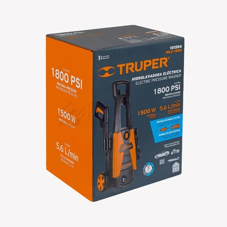

Hidrolavadora

Máquina que impulsa agua a presión para retirar suciedad de pisos, patios, vehículos y otras superficies compatibles. La boquilla y la presión deben elegirse para no deteriorar el material que se limpia.